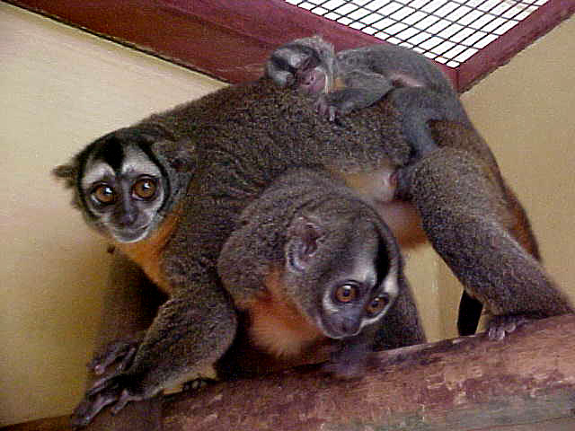

Mono Nocturno
- Nombre comun: Mono nocturno
- Nombre cientifico: Aotus
- Origen: es un primate neotropical poco conocido, que habita los Andes colombianos y presumiblemente tambien los venezolanos.
- Cantidad: 17
- Caracteristicas: La longitud total del cuerpo alcanza de 24 a 37 cm, la cola de 24 a 37 cm y el peso de 450 a 1250 g. El pelaje es denso y lanudo de color gris a castaño en la parte superior y crema a anaranjado en el pecho y parte inferior.
- Alimentacion: Se alimentan de frutos, néctar, hojas, insectos, lagartijas, aves y pequeños mamiferos.
- Reproduccion: Tienen una cria al año que nace a los 133 dias de gestacion y permanece con sus padres durante unos dos años y medio.
- Estado de conservacion:Se enuentra en amenaza de prligro de extincion.